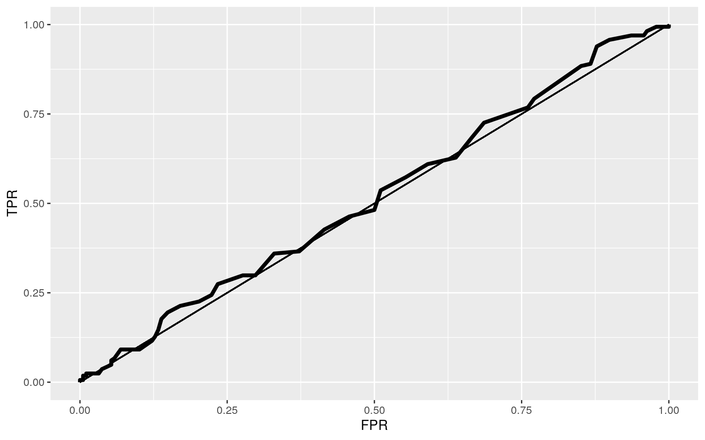

library(tidyverse)
students <- read_csv("student-mat.csv")
head(students)## # A tibble: 6 x 33
## school sex age address famsize Pstatus Medu Fedu Mjob
Fjob reason guardian traveltime
## <chr> <chr> <dbl> <chr> <chr> <chr> <dbl> <dbl> <chr>
<chr> <chr> <chr> <dbl>
## 1 GP F 18 U GT3 A 4 4 at_h… teac… course mother 2
## 2 GP F 17 U GT3 T 1 1 at_h… other course father 1
## 3 GP F 15 U LE3 T 1 1 at_h… other other mother 1
## 4 GP F 15 U GT3 T 4 2 heal… serv… home mother 1
## 5 GP F 16 U GT3 T 3 3 other other home father 1
## 6 GP M 16 U LE3 T 4 3 serv… other reput… mother 1
## # … with 20 more variables: studytime <dbl>, failures
<dbl>, schoolsup <chr>, famsup <chr>,
## # paid <chr>, activities <chr>, nursery <chr>, higher
<chr>, internet <chr>, romantic <chr>,
## # famrel <dbl>, freetime <dbl>, goout <dbl>, Dalc <dbl>,
Walc <dbl>, health <dbl>,
## # absences <dbl>, G1 <dbl>, G2 <dbl>, G3 <dbl>studentsvar <- students[-c(1,5,7,8,11,12,13,14,15,16,17,19,20,21,24,25,29,31,32,33)]
head(studentsvar)## # A tibble: 6 x 13
## sex age address Pstatus Mjob Fjob paid internet romantic
goout Dalc Walc absences
## <chr> <dbl> <chr> <chr> <chr> <chr> <chr> <chr> <chr>
<dbl> <dbl> <dbl> <dbl>
## 1 F 18 U A at_home teacher no no no 4 1 1 6
## 2 F 17 U T at_home other no yes no 3 1 1 4
## 3 F 15 U T at_home other yes yes no 2 2 3 10
## 4 F 15 U T health services yes yes yes 2 1 1 2
## 5 F 16 U T other other yes no no 2 1 2 4
## 6 M 16 U T services other yes yes no 2 1 2 10studentsvar <- studentsvar %>% rename(tutor = paid)
studentsvar <- studentsvar %>% rename(weekday_alc = Dalc)
studentsvar <- studentsvar %>% rename(weekend_alc = Walc)
studentsvar <- studentsvar %>% rename(go_out = goout)
studentsvar <- studentsvar %>% mutate(tutor = ifelse(tutor == "no",0,1))
studentsvar <- studentsvar %>% mutate(internet = ifelse(internet == "no",0,1))
studentsvar <- studentsvar %>% mutate(romantic = ifelse(romantic == "no",0,1))
studentsvar$age <- students$age %>% as.numeric()
studentsvar <- studentsvar[(studentsvar$age<19),]
studentsvar$absences <- studentsvar$absences %>% as.numeric()
studentsvar <- studentsvar[(studentsvar$absences<20),]
studentsvar$tutor <- studentsvar$tutor %>% as.integer()
studentsvar## # A tibble: 352 x 13
## sex age address Pstatus Mjob Fjob tutor internet
romantic go_out weekday_alc weekend_alc
## <chr> <dbl> <chr> <chr> <chr> <chr> <int> <dbl> <dbl>
<dbl> <dbl> <dbl>
## 1 F 18 U A at_h… teac… 0 0 0 4 1 1
## 2 F 17 U T at_h… other 0 1 0 3 1 1
## 3 F 15 U T at_h… other 1 1 0 2 2 3
## 4 F 15 U T heal… serv… 1 1 1 2 1 1
## 5 F 16 U T other other 1 0 0 2 1 2
## 6 M 16 U T serv… other 1 1 0 2 1 2
## 7 M 16 U T other other 0 1 0 4 1 1
## 8 F 17 U A other teac… 0 0 0 4 1 1
## 9 M 15 U A serv… other 1 1 0 2 1 1
## 10 M 15 U T other other 1 1 0 1 1 1
## # … with 342 more rows, and 1 more variable: absences
<dbl>library(rstatix)
# MANOVA
manproj<-manova(cbind(weekday_alc,weekend_alc)~age, data=studentsvar)
summary(manproj)## Df Pillai approx F num Df den Df Pr(>F)
## age 1 0.020258 3.6082 2 349 0.02812 *
## Residuals 350
## ---
## Signif. codes: 0 '***' 0.001 '**' 0.01 '*' 0.05 '.' 0.1
' ' 1# UNIVARIATE ANOVA
summary.aov(manproj)## Response weekday_alc :
## Df Sum Sq Mean Sq F value Pr(>F)
## age 1 1.951 1.9506 2.5326 0.1124
## Residuals 350 269.569 0.7702
##
## Response weekend_alc :
## Df Sum Sq Mean Sq F value Pr(>F)
## age 1 11.93 11.9295 7.2084 0.007601 **
## Residuals 350 579.23 1.6549
## ---
## Signif. codes: 0 '***' 0.001 '**' 0.01 '*' 0.05 '.' 0.1
' ' 1# T TEST
pairwise.t.test(studentsvar$weekday_alc,studentsvar$age, p.adj="none")##
## Pairwise comparisons using t tests with pooled SD
##
## data: studentsvar$weekday_alc and studentsvar$age
##
## 15 16 17
## 16 0.55 - -
## 17 0.31 0.64 -
## 18 0.13 0.31 0.58
##
## P value adjustment method: nonepairwise.t.test(studentsvar$weekend_alc,studentsvar$age, p.adj="none")##
## Pairwise comparisons using t tests with pooled SD
##
## data: studentsvar$weekend_alc and studentsvar$age
##
## 15 16 17
## 16 0.0586 - -
## 17 0.0027 0.2198 -
## 18 0.0161 0.5081 0.6115
##
## P value adjustment method: none## Assumptions
group <- studentsvar$age
DVs <- studentsvar %>% select(go_out,weekday_alc,weekend_alc)
#Test multivariate normality for each group (null: assumption met)
sapply(split(DVs,group), mshapiro_test)## 15 16 17 18
## statistic 0.7344 0.697426 0.8724954 0.8841596
## p.value 8.415035e-11 3.99365e-13 2.559077e-07
3.135033e-06#If any p<.05, stop (assumption violated). If not, test homogeneity of covariance matricescol.rainbow <- rainbow(12)
palette(col.rainbow)
one.way <- aov(go_out ~ Mjob, data = studentsvar)
summary(one.way)## Df Sum Sq Mean Sq F value Pr(>F)
## Mjob 4 1.9 0.4707 0.376 0.826
## Residuals 347 434.8 1.2530ggplot(studentsvar, aes(x=Mjob, y=absences, fill=Mjob)) +
geom_boxplot(alpha=0.3) +
theme(legend.position="none") What proportion of the variation in the outcome does your model explain? (4)
library(sandwich)
library(lmtest)
palette(col.rainbow)
studentsvarc<- studentsvar%>% mutate(weekday_alc_c=weekday_alc-mean(weekday_alc),absences_c=absences-mean(absences))
studentfit<-glm(tutor~weekday_alc_c*absences_c, data=studentsvarc, family="binomial")
coef(studentfit)%>%exp%>%round(5)%>%data.frame## .
## (Intercept) 0.84667
## weekday_alc_c 1.09656
## absences_c 0.98606
## weekday_alc_c:absences_c 1.03929coeftest(studentfit)##
## z test of coefficients:
##
## Estimate Std. Error z value Pr(>|z|)
## (Intercept) -0.166443 0.109126 -1.5252 0.1272
## weekday_alc_c 0.092179 0.137226 0.6717 0.5018
## absences_c -0.014043 0.024154 -0.5814 0.5610
## weekday_alc_c:absences_c 0.038533 0.025657 1.5019 0.1331studentsvarc$predprob<-predict(studentfit,type="response")
resids<-studentfit$residuals; fitvals<-studentfit$fitted.values
ggplot()+geom_point(aes(fitvals,resids))+geom_hline(yintercept=0, col="red")ggplot()+geom_histogram(aes(resids),bins=20)ggplot(studentsvarc, aes(x=absences_c, y=weekday_alc_c,group=tutor))+geom_point(aes(color=tutor))+
geom_smooth(method="lm",formula=y~1,fullrange=T,aes(color=tutor))+
theme(legend.position=c(.9,.8))+xlab("absences")bptest(studentfit)##
## studentized Breusch-Pagan test
##
## data: studentfit
## BP = 10.991, df = 3, p-value = 0.01177# Robust SE's
coeftest(studentfit, vcov=vcovHC(studentfit))##
## z test of coefficients:
##
## Estimate Std. Error z value Pr(>|z|)
## (Intercept) -0.166443 0.110568 -1.5053 0.1322
## weekday_alc_c 0.092179 0.150424 0.6128 0.5400
## absences_c -0.014043 0.024205 -0.5802 0.5618
## weekday_alc_c:absences_c 0.038533 0.025805 1.4932 0.1354(sum((studentsvarc$weekday_alc_c-mean(studentsvarc$weekday_alc_c))^2)-sum(studentfit$residuals^2))/sum((studentsvarc$weekday_alc_c-mean(studentsvarc$weekday_alc_c))^2)## [1] -4.261791### Bootstrapping residuals
fit<-lm(tutor~weekday_alc_c*absences_c,data=studentsvarc) #fit model
resids<-fit$residuals #save residuals
fitted<-fit$fitted.values #save yhats/predictions
resid_resamp<-replicate(5000,{
new_resids<-sample(resids,replace=TRUE) #resample resids w/ replacement
studentsvarc$new_y<-fitted+new_resids #add new resids to yhats to get new "data"
fit<-lm(new_y~weekday_alc_c*absences_c,data=studentsvarc) #refit model
coef(fit) #save coefficient estimates (b0, b1, etc)
})
resid_resamp%>%t%>%as.data.frame%>%summarize_all(sd)## (Intercept) weekday_alc_c absences_c
weekday_alc_c:absences_c
## 1 0.02695136 0.03332847 0.005997713 0.005892568Using ggplot, make a density plot of the log-odds (logit) colored/grouped by your binary outcome variable (3) # Binary Variable Fit #### As age increases, the probability that a student is in a romantic relationships increases by 0.306. As going out increases, the probability that they're in a romantic relationship increases by 0.0009. #### From the confusion matric, the accuracy is 0.4573864, the sensitivity is 0.05851064, the specificity is 0.9146341, and the precision is 0.44. #### Logit graph, ROC curve shown. #### AUC is 0.5031785, which means it is bad. It is barely better than a classifier that randomly predicts 0s and 1s.
studentfitrom<-glm(romantic~go_out+age, data=studentsvar, family="binomial")
coef(studentfitrom)%>%exp%>%round(5)%>%data.frame## .
## (Intercept) 0.00285
## go_out 1.00098
## age 1.35863coeftest(studentfitrom)##
## z test of coefficients:
##
## Estimate Std. Error z value Pr(>|z|)
## (Intercept) -5.86165628 1.81782769 -3.2245 0.001262 **
## go_out 0.00098022 0.10600085 0.0092 0.992622
## age 0.30647707 0.11075901 2.7671 0.005656 **
## ---
## Signif. codes: 0 '***' 0.001 '**' 0.01 '*' 0.05 '.' 0.1
' ' 1studentsvar$prob <- predict(studentfitrom,type="response")
# predicted outcomes (if prob>.5, predict malignant, otherwise predict benign)
studentsvar$predicted <- ifelse(studentsvar$prob>.5,"no","yes")
# confusion matrix
table(truth=studentsvar$tutor, prediction=studentsvar$predicted)%>%addmargins## prediction
## truth yes Sum
## 0 188 188
## 1 164 164
## Sum 352 352# accuracy
(11+150)/352## [1] 0.4573864#sensitivity
11/188## [1] 0.05851064# specificity
150/164## [1] 0.9146341# precision
11/25## [1] 0.44# plot
library(plotROC)
studentsvar$logit<-predict(studentfitrom)
# ROC curve
sens<-function(p,studentsvar=studentsvar, tutor=tutor) mean(studentsvar[studentsvar$tutor==1,]$prob>p)
spec<-function(p,studentsvar=studentsvar, tutor=tutor) mean(studentsvar[studentsvar$tutor==0,]$prob<p)
sensitivity<-sapply(seq(0,1,.01),sens,studentsvar)
specificity<-sapply(seq(0,1,.01),spec,studentsvar)
ROC1<-data.frame(sensitivity,specificity,cutoff=seq(0,1,.01))
ROC1$TPR<-sensitivity
ROC1$FPR<-1-specificity
ROC1%>%ggplot(aes(FPR,TPR))+geom_path(size=1.5)+geom_segment(aes(x=0,y=0,xend=1,yend=1)) +
scale_x_continuous(limits = c(0,1))ROCplot<-ggplot(studentsvar)+geom_roc(aes(d=tutor,m=prob), n.cuts=0)
ROCplotcalc_auc(ROCplot)## PANEL group AUC
## 1 1 -1 0.5031785library(tidyverse)
library(randomForest)
library(knitr)
library(pROC)
library(lmtest)
library(glmnet)
library(pscl)
studentfitall <- glm(romantic~.,family="binomial", data=studentsvarc)
coef(studentfitall)%>%exp%>%round(5)%>%data.frame## .
## (Intercept) 0.00238
## sexM 0.74011
## age 1.38645
## addressU 0.86087
## PstatusT 0.64578
## Mjobhealth 1.46024
## Mjobother 1.23826
## Mjobservices 0.68941
## Mjobteacher 0.63699
## Fjobhealth 0.51292
## Fjobother 0.39871
## Fjobservices 0.51656
## Fjobteacher 0.91105
## tutor 0.98957
## internet 2.14900
## go_out 0.96512
## weekday_alc 1.01953
## weekend_alc 1.03661
## absences 1.00663
## weekday_alc_c NA
## absences_c NA
## predprob 3.47686coeftest(studentfitall)##
## z test of coefficients:
##
## Estimate Std. Error z value Pr(>|z|)
## (Intercept) -6.0390815 2.4919538 -2.4234 0.015375 *
## sexM -0.3009591 0.2672137 -1.1263 0.260044
## age 0.3267476 0.1190493 2.7446 0.006058 **
## addressU -0.1498072 0.3015084 -0.4969 0.619288
## PstatusT -0.4373023 0.4046938 -1.0806 0.279886
## Mjobhealth 0.3786027 0.5236329 0.7230 0.469661
## Mjobother 0.2137084 0.3841309 0.5563 0.577977
## Mjobservices -0.3719258 0.4237510 -0.8777 0.380107
## Mjobteacher -0.4510030 0.4817139 -0.9362 0.349146
## Fjobhealth -0.6676429 0.7921249 -0.8429 0.399312
## Fjobother -0.9195207 0.5659561 -1.6247 0.104222
## Fjobservices -0.6605694 0.5840561 -1.1310 0.258054
## Fjobteacher -0.0931567 0.6832003 -0.1364 0.891542
## tutor -0.0104872 0.2542467 -0.0412 0.967098
## internet 0.7650043 0.3828730 1.9981 0.045710 *
## go_out -0.0355064 0.1217294 -0.2917 0.770529
## weekday_alc 0.0193370 0.2296912 0.0842 0.932908
## weekend_alc 0.0359563 0.1385118 0.2596 0.795180
## absences 0.0066046 0.0276836 0.2386 0.811435
## weekday_alc_c NA NA NA NA
## absences_c NA NA NA NA
## predprob 1.2461297 2.9290135 0.4254 0.670513
## ---
## Signif. codes: 0 '***' 0.001 '**' 0.01 '*' 0.05 '.' 0.1
' ' 1studentsvar$logit<-predict(studentfitall)
studentsvar$prob <- predict(studentfitall,type="response")
# predicted outcomes (if prob>.5, predict malignant, otherwise predict benign)
studentsvar$predicted <- ifelse(studentsvar$prob>.5,"no","yes")
# confusion matrix
table(truth=studentsvar$tutor, prediction=studentsvar$predicted)%>%addmargins## prediction
## truth no yes Sum
## 0 13 175 188
## 1 15 149 164
## Sum 28 324 352# accuracy
(13+149)/352## [1] 0.4602273#sensitivity
13/188## [1] 0.06914894# specificity
149/164## [1] 0.9085366# precision
13/28## [1] 0.4642857# plot
library(plotROC)
studentsvar$logit<-predict(studentfitall)
# ROC curve
sens<-function(p,studentsvar=studentsvar, tutor=tutor) mean(studentsvar[studentsvar$tutor==1,]$prob>p)
spec<-function(p,studentsvar=studentsvar, tutor=tutor) mean(studentsvar[studentsvar$tutor==0,]$prob<p)
sensitivity<-sapply(seq(0,1,.01),sens,studentsvar)
specificity<-sapply(seq(0,1,.01),spec,studentsvar)
ROC1<-data.frame(sensitivity,specificity,cutoff=seq(0,1,.01))
ROC1$TPR<-sensitivity
ROC1$FPR<-1-specificity
ROC1%>%ggplot(aes(FPR,TPR))+geom_path(size=1.5)+geom_segment(aes(x=0,y=0,xend=1,yend=1)) +
scale_x_continuous(limits = c(0,1))
ROCplot<-ggplot(studentsvar)+geom_roc(aes(d=tutor,m=prob), n.cuts=0)
ROCplot#AUC
calc_auc(ROCplot)## PANEL group AUC
## 1 1 -1 0.5172872#part 2
set.seed(1234)
k=10
library(lmtest)
##declare class_diag
class_diag<-function(prob,truth){
tab<-table(factor(prob>.5,levels=c("FALSE","TRUE")),truth)
acc=sum(diag(tab))/sum(tab)
sens=tab[2,2]/colSums(tab)[2]
spec=tab[1,1]/colSums(tab)[1]
ppv=tab[2,2]/rowSums(tab)[2]
if(is.numeric(truth)==FALSE & is.logical(truth)==FALSE) truth<-as.numeric(truth)-1
#CALCULATE EXACT AUC
ord<-order(prob, decreasing=TRUE)
prob <- prob[ord]; truth <- truth[ord]
TPR=cumsum(truth)/max(1,sum(truth))
FPR=cumsum(!truth)/max(1,sum(!truth))
dup<-c(prob[-1]>=prob[-length(prob)], FALSE)
TPR<-c(0,TPR[!dup],1); FPR<-c(0,FPR[!dup],1)
n <- length(TPR)
auc<- sum( ((TPR[-1]+TPR[-n])/2) * (FPR[-1]-FPR[-n]) )
data.frame(acc,sens,spec,ppv,auc)
}
folddata <- studentsvarc %>% sample_frac #put rows of dataset in random order
folds <- ntile(1:nrow(folddata),n=10) #create fold labels
diags<-NULL
for(i in 1:k){
train <- folddata[folds!=i,] #create training set (all but fold i)
test <- folddata[folds==i,] #create test set (just fold i)
truth <- test$tutor #save truth labels from fold i
fit <- glm(tutor~(.), data=train, family="binomial")
probs <- predict(fit, newdata=test, type="response")
diags<-rbind(diags,class_diag(probs,truth))
}
summarize_all(diags,mean)## acc sens spec ppv auc
## 1 0.5593651 0.4750494 0.6316069 0.5278126 0.6018012# lasso
library(glmnet)
set.seed(1234)
y<-as.matrix(studentsvarc$tutor) #grab response
stu_preds<-model.matrix(tutor~.,data=studentsvarc)[,-1] #predictors (drop intercept)
cv <- cv.glmnet(stu_preds,y, family="binomial") #picks an optimal value for lambda through 10-fold CV
cv<-cv.glmnet(stu_preds,y,family="binomial")
lasso_fit<-glmnet(stu_preds,y,family="binomial",lambda=cv$lambda.1se)
coef(lasso_fit)## 22 x 1 sparse Matrix of class "dgCMatrix"
## s0
## (Intercept) -0.6855284
## sexM -0.1413215
## age .
## addressU .
## PstatusT .
## Mjobhealth .
## Mjobother .
## Mjobservices .
## Mjobteacher 0.1499939
## Fjobhealth .
## Fjobother .
## Fjobservices .
## Fjobteacher .
## internet 0.2985545
## romantic .
## go_out .
## weekday_alc .
## weekend_alc .
## absences .
## weekday_alc_c .
## absences_c .
## predprob 0.7346752problas <- predict(lasso_fit, stu_preds, type="response")
table(predict=as.numeric(problas>.5),truth=studentsvarc$tutor)%>%addmargins## truth
## predict 0 1 Sum
## 0 182 143 325
## 1 6 21 27
## Sum 188 164 35221/27## [1] 0.7777778...